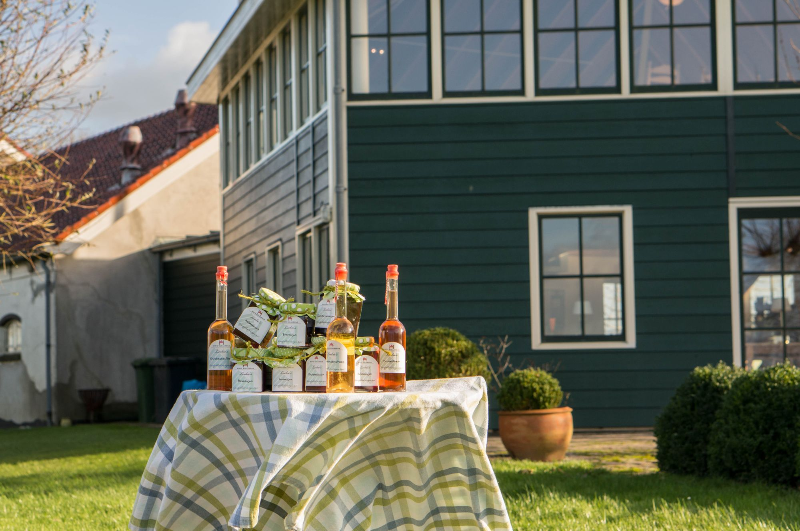

Van eerste advent tot en met januari. Het seizoenslogo van de ontwerper, en dezelfde site in een koudere jas: sage wijkt voor vorst, het groen zakt dieper, goud wordt kaarslicht.
Social — 1080 × 1080
aan tafel met
Kerstdiner in de Hooiberg
2526 DECEMBERRIJLAARSDAM.NL
Menukaart — A5, goud op sneeuw
vijf gangen
Winterkeuken
Coquille & knolselderij
geroosterde hazelnoot, bruine boter
Hertenrug van de Nieuwkoopse plassen
rode kool, jus van jeneverbes
Gepocheerde peer
kruidnagelijs, karamel van muscovado
HOEVE RIJLAARSDAM · NIEUWKOOP
Hero — winterband op de site

kom binnen uit
De kou
BEKIJK HET WINTERPROGRAMMA
Kaartje — mono, gestempeld
TAFEL VOOR TWEE
19.30 uur · Hooiberg boven
Bord — panel op sneeuw
welkom
Jassen graag links, de glühwein staat rechts
Bestaande componenten in het seizoen
Dezelfde RoomCard — alleen data-season="winter" op de sectie.